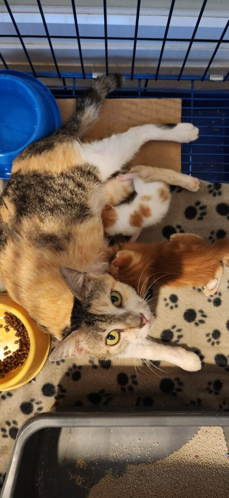
Butuh dukungan aktif
Padma
Kontrol dan pemantauan pascaoperasi amputasi masih terus berjalan.
Sponsor pemulihan Padma →Cerita Casa de Luna
Kisah penyelamatan, perawatan harian, dan kehidupan di rumah rembulan — sebagian masih menunggu dukungan, sebagian telah menemukan tempatnya.
Tiga cerita yang saat ini masih membutuhkan dukungan.

Kontrol dan pemantauan pascaoperasi amputasi masih terus berjalan.
Sponsor pemulihan Padma →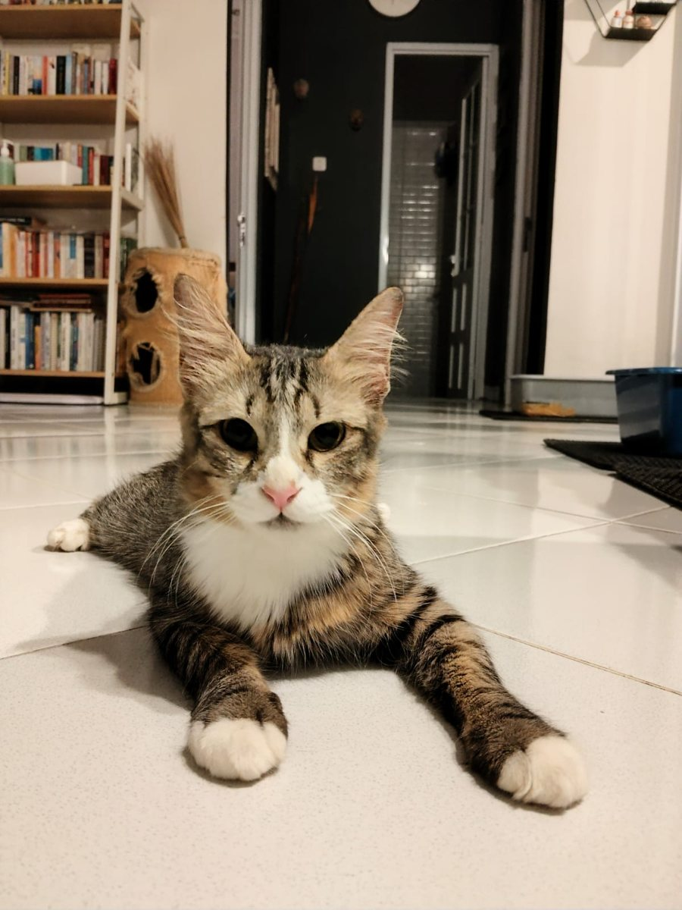
Setelah operasi, Olenka masih membutuhkan kontrol rutin dan obat lanjutan.
Sponsor pemulihan Olenka →Baca kisah Olenka →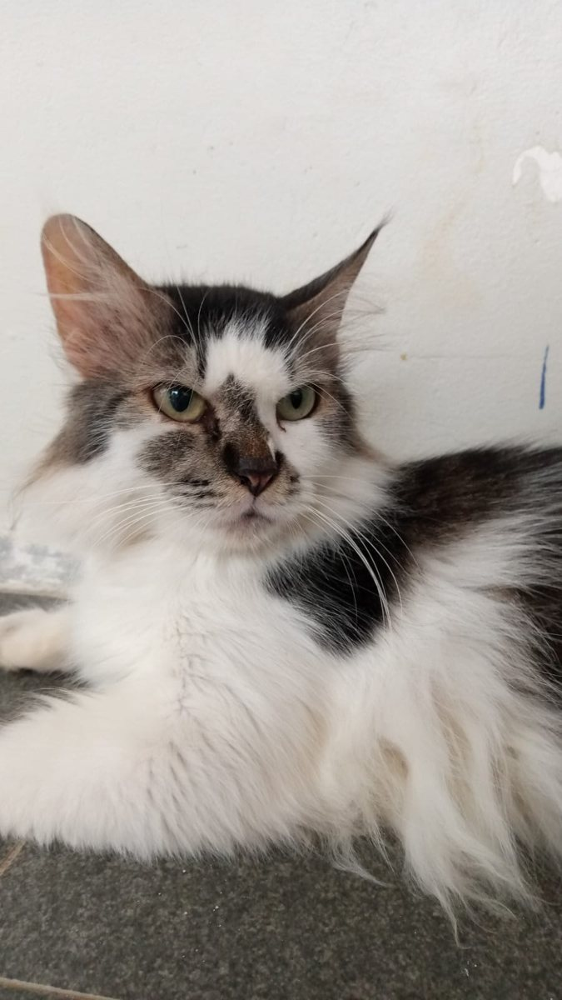
Setelah operasi besar, kontrol pascaoperasi Marina masih terus berjalan.
Sponsor pemulihan Marina →Baca kisah Marina →Padma telah melewati operasi amputasi. Kontrol dan pemantauan pascaoperasi masih berjalan.
Baca kisah Padma →Olenka menjalani masa pemulihan setelah operasi, dengan kontrol dan obat lanjutan.
Sponsor pemulihan Olenka →Marina sudah pulih dari operasi besar; pemantauan pascaoperasi masih berlangsung.
Sponsor pemulihan Marina →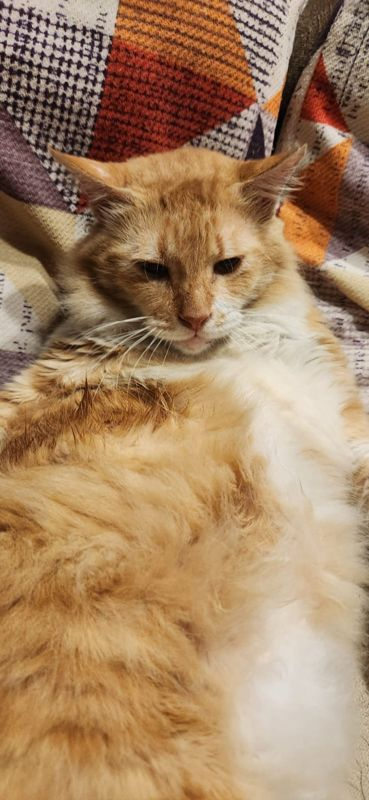
Seorang pengelana yang memilih pulang ke sofa Casa de Luna — lengkap dengan rutinitas malam dan dengkuran khasnya.
Baca kisah JaJang →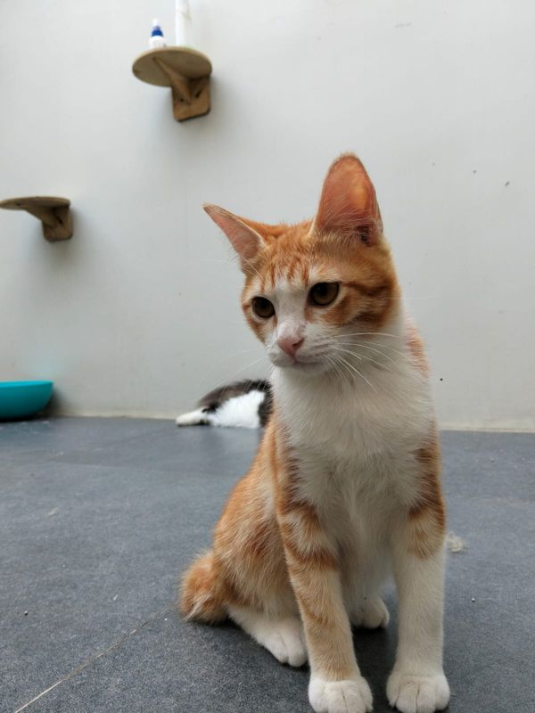
Kejar-kejaran seru antara Sang Kecoa Hitam Beradar Satu dan Trio Wewew: Binggo, Flyn, dan Elmo.
Baca serial petualangan →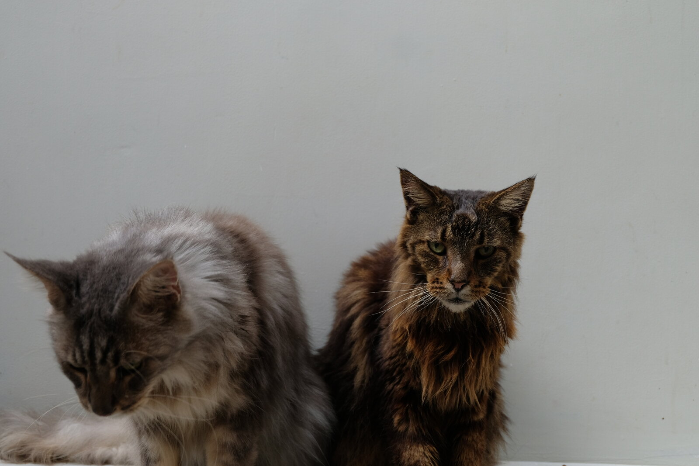
Mika masih dalam perawatan. Dukungan virtual membantu biaya hidup dan pemulihannya.
Dukung Mika secara virtual →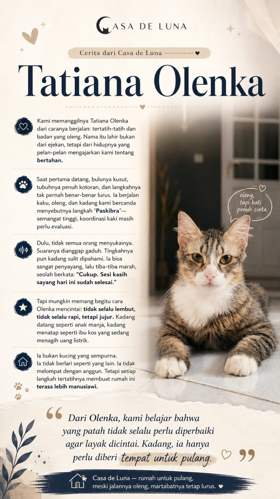
Sebuah kisah tentang nama, rumah, dan bagaimana kepedulian memberi kesempatan baru untuk pulang.
Baca kisah Tatiana →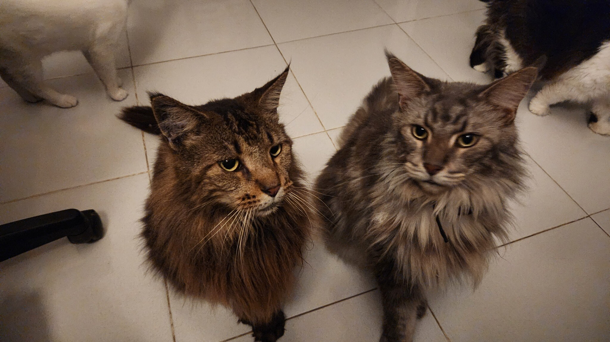
Tanda kecil pada kucing senior sering luput, padahal dapat menjadi petunjuk awal masalah ginjal.
Baca catatan perawatan →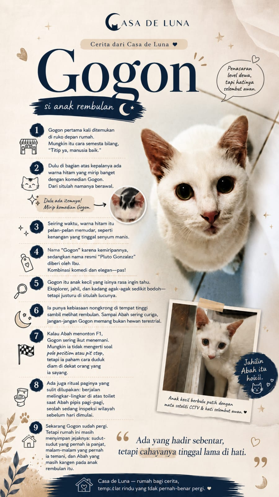
Merawat sampai akhir juga merupakan bentuk cinta. Cahaya Gogon tinggal lama di rumah rembulan.
Baca kisah Gogon →Pengalaman Blue menjadi dasar protokol penanganan darurat Casa de Luna.
Bantu siapkan dana darurat →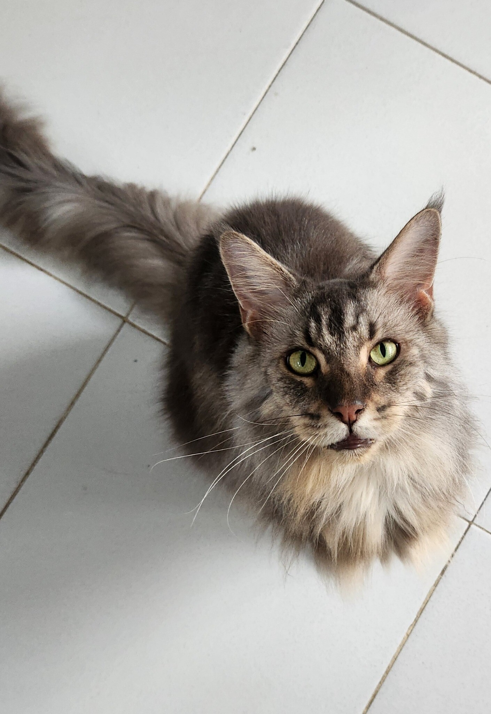
Empat perubahan kecil pada perilaku Dunan menjadi bahasa paling jujur bahwa ada sesuatu yang tidak beres.
Baca cerita Dunan →Tidak ada cerita pada kelompok ini.
Cerita-cerita Casa de Luna sedang disusun menjadi satu buku. Ikuti perkembangannya untuk tahu saat buku ini siap dipesan.
Ikuti perkembangan buku →Sebuah kisah tentang nama, rumah, dan bagaimana kepedulian memberi kesempatan baru untuk pulang.
Ikuti cerita di Instagram ↗Cerita seperti Tatiana ada karena ada yang mau peduli lebih dulu. Bantu kami merawat kucing-kucing lain yang menunggu giliran seperti dia lewat sponsorship atau donasi →
Ada yang hadir sebentar, tetapi cahayanya tinggal lama. Merawat sampai akhir juga merupakan bentuk cinta.
Baca lanjutan ↗Merawat sampai akhir butuh biaya dan tenaga yang nyata. Dukunganmu membantu kami memberi perawatan paliatif yang layak untuk kucing seperti Gogon. Dukung perawatan paliatif →
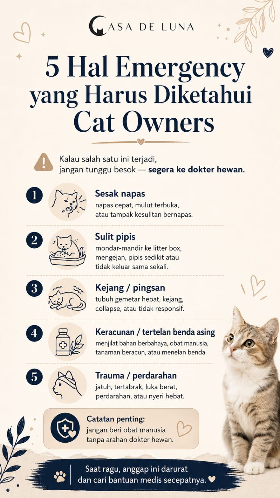
5 HalCatatan praktis untuk mengenali keadaan darurat dan menentukan kapan perlu mencari bantuan dokter hewan.
Lihat layanan Pet Care →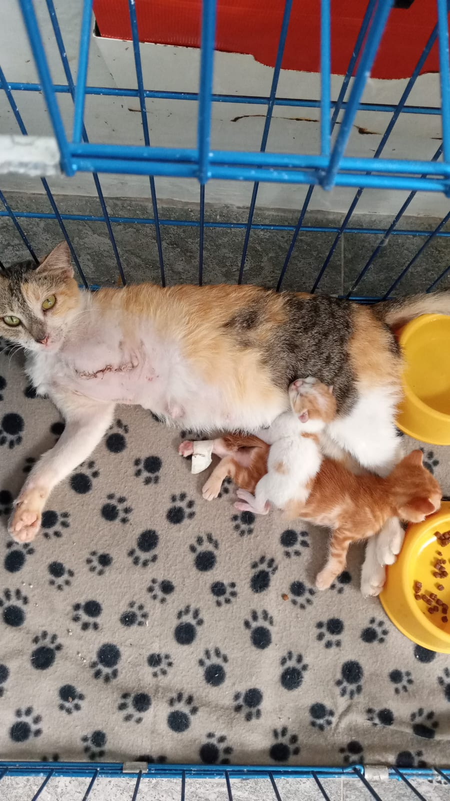
Sebuah potret sederhana dari ruang perawatan: induk kucing dan anak-anaknya, bersama dalam suasana yang aman dan hangat.
Dukung perawatan mereka →Padma datang dengan kaki yang terluka dan sedang hamil. Setelah amputasi, ia tetap tegar dan memberi kehidupan kepada anak yang membutuhkan.
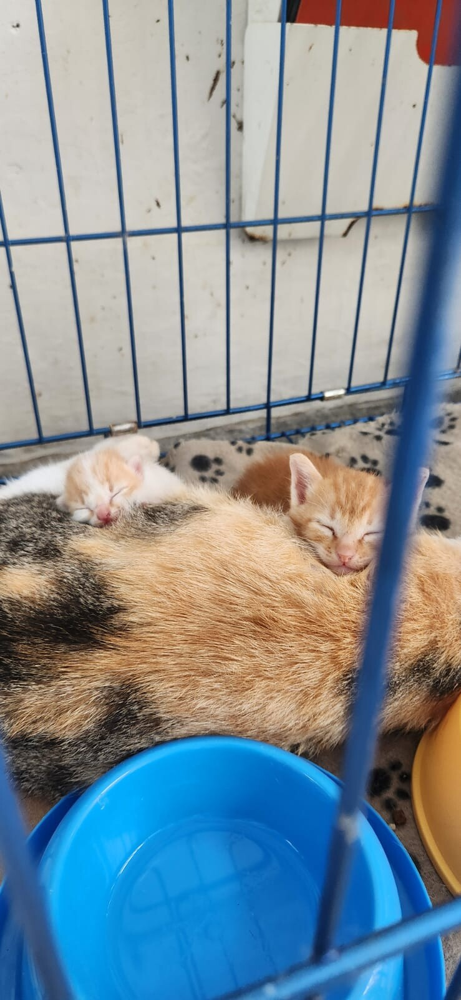
Sore itu, Sabtu. Padma datang dengan kaki kiri yang bengkak, luka menganga membesar di satu-dua titik, merona pink dengan guratan-guratan bekas luka yang tak beraturan. Mirip lengkuas — tapi versi yang babak belur.
Ceritanya sebenarnya sudah dimulai lima hari sebelumnya, ketika misi penyelamatan mulai didiskusikan — Padma sudah tidak bisa lagi dipertahankan di salah satu perumahan karena sebagian penghuninya tak suka kehadiran kucing, dan ia harus segera dipindahkan. Kaki lengkuasnya itu hasil pukulan manusia. Untungnya seorang tetangga melihat, merawatnya sebentar, dan menjauhkannya dari tangan yang jahat. Temanku dan tetangga itulah yang menginisiasi penyelamatannya, ikut merawat Padma sebelum akhirnya mengantarnya sendiri, bersama keluarga temanku, ke rumah barunya — Rumah Rembulan, atau Casa de Luna.
Begitu tiba di Casa de Luna, cerita temanku tentang kondisi kucing pincang yang sedang hamil ini semakin jelas terlihat. Kehamilan si pincang — begitu panggilannya ketika datang — membuat pengobatan agresif jadi pilihan yang sulit. Kami hanya bisa memberi antibiotik, berharap luka yang bernanah dan basah itu mengering sedikit demi sedikit, dan ternyata berhasil. Seminggu kemudian, hari Selasa tanggal 18 Agustus, Padma melahirkan — seorang bayi prematur, tanpa bulu, hanya kulit saja, dengan teriakan yang sempat melengking namun sayangnya tak lama bertahan. Sabtu di minggu berikutnya, Ungger menyusul tanpa banyak basa-basi, berselang lebih dari seminggu sejak kepergian kakaknya yang pertama. Perut Padma masih saja bulat, jadi kami menunggu, siapa tahu ada adik lain yang mau datang.
Kami menunggu terus. Tak kunjung datang.
Ungger, bayi Padma yang tak pernah lepas dari susu ibunya, lapar terus — “ungger” rasanya memang nama yang pas untuk bocah kecil yang rakus ini. Beberapa perawatan sempat kami tunda demi Ungger yang masih menyusu. Satu-dua minggu berlalu tanpa tanda-tanda adik lain yang akan menyusul, sementara kaki Padma justru makin membesar dan bernanah. Kekhawatiran terbesar kami saat itu adalah kanker — jika terlambat ditangani, bisa menyebar dan mengancam nyawa sang ibu. Karena tak kunjung ada adik lain yang menampakkan diri, USG pun dilakukan untuk memastikannya. Hasilnya: Ungger memang anak tunggal yang tersisa.
Dengan bayangan kanker yang menghantui, aku sempat bimbang — berusaha menghindari amputasi dan berharap penyembuhan bisa berjalan normal lewat antibiotik dan perawatan luka saja. Tapi di sisi lain, aku juga cemas: kalau ini benar kanker, ia bisa menyebar ke mana-mana. Aku pun mulai mencari beberapa klinik dengan harga yang masuk akal, karena terus terang harga jadi pertimbangan penting, tapi aku tak mau mengorbankan keamanan proses amputasinya nanti. Untungnya, teman baik yang dulu mengantar Padma ke rumah ini bersedia membantu menggalang dana untuk biaya pengobatannya.
Empat hari setelah USG, kami akhirnya melakukan rontgen. Namun dalam seminggu itu, kaki kiri Padma justru makin mengembang dan merekah, berkilat basah karena ia terus-menerus menjilatinya. Setiap malam, kaki yang membengkak dengan luka bernanah itu dibersihkan, diberi salep, dibalut perban, dan diganti agar tetap kering dan tak lagi dijilat. Selama itu, Padma tampak lebih nyaman, muka Ungger pun tidak lagi basah atau bau nanah yang menetes dari kaki kiri ibunya.
Keputusan mengamputasi kaki Padma itu sendiri sudah kuambil tiga hari sebelum operasi dilakukan, terutama setelah hasil rontgen keluar dan menunjukkan adanya massa padat di sekitar kakinya. Balutan perban memang sempat membuat lukanya kering, tapi sekering apa pun, aku sadar lukanya akan terus berulang. Padma tak akan pernah nyaman menyeret-nyeret kaki lengkuasnya yang bengkaknya terus merambat naik.
Minggu, 6 September, di tengah debu vulkanik Krakatau yang masih beterbangan, Padma akhirnya menjalani operasi amputasi. Pilihan yang berat — tapi mempertahankan kaki itu pun tak akan membuat hidupnya lebih sehat, apalagi lebih selamat, ke depannya. Kuantar Padma bersama Ungger di dalam tas ke sebuah klinik.
“Dok, titip Padma, ya,” kataku, sebelum dokter melakukan rontgen dan cek darah pra-operasi. Aku sempat khawatir soal kadar trombositnya — kalau tidak mencukupi, operasi bisa tertunda — tapi alhamdulillah Padma dinyatakan sehat dan aman untuk melanjutkan proses amputasi. Pukul 11.00 kami tiba di klinik, dan pukul 14.30 telepon dari dokter mengabarkan Padma sudah boleh dibawa pulang.
Lega. Satu keping beban akhirnya terangkat. Kini tinggal menemani Padma menyusui dan pulih selama masa transisinya.
Padma kini resmi menyandang gelar kucing berkaki tiga. Padmarena bersalin nama jadi Tria Pingkan Padmarena, gadis dari perumahan yang datang dengan tiga kaki berwarna merah jambu.
Padma sekarang terlihat jauh lebih segar, makannya lahap diberi Mother and Kitten dari Royal Canin. Dan siapa lagi yang paling senang, kalau bukan Ungger?
Cerita Padma tak berhenti setelah amputasi. Suatu sore, seorang perempuan datang membawa dus cokelat kecil berisi seekor kitten yang usianya mungkin baru genap seminggu. “Ada kucing yang sedang menyusui di sini, Bu?” Kitten itu, katanya, ditemukan begitu saja di pinggir jalan — induknya entah ke mana.
“Iya, nggak apa-apa, sini saja,” kataku, buru-buru menutup pagar sebelum Kimi — si bocah rembulan yang selalu tak sabar ingin keluar setiap kali pintu pagar terbuka — keburu kabur.
Aku sendiri tak tahu dari mana tiba-tiba seorang ibu paruh baya, menggendong bayi kucing itu, muncul begitu saja di depan rumah. “Pak satpam bilang saya disuruh ke rumah ini. Katanya di sini Pet Rescue,” katanya.
“Oke, Bu, tinggal saja di sini,” jawabku, berharap percakapan itu segera usai — sejujurnya aku tak paham siapa dan bagaimana ibu ini benar-benar sampai ke sini.
Anak Padma yang pergi lebih dulu, kini seolah kembali dalam wujud lain: Duz Blanko Oberman. Begitulah Ungger Remington mendapat saudara sesusu — hanya dalam sekejap waktu, di satu sore biasa.
Padma yang baik — kakinya memang tak lagi utuh, karena pernah dipukul manusia. Tapi Padma, seorang kucing yang tetap tegar, membuktikan: ia bukan hanya bisa terus hidup, ia bahkan sanggup memberi kehidupan pada seorang anak yang entah di rimba mana induknya berada.
Dipukul tidak membuat Padma jatuh — ia hanya belajar berjalan dengan tiga kaki. Kasih sayang, bagi manusia, sering cuma teori dan hitung-hitungan — apalagi untuk yang lemah. Padma membuktikan sebaliknya: satu pukulan, tiga kaki, satu cinta. Sebuah aksi, bukan teori atau hitungan. Ia tidak patah — ia justru utuh.
Cerita Padma bisa berakhir baik karena ada yang mau turun tangan membantu biaya pengobatannya. Kalau cerita ini menyentuhmu, kamu juga bisa membantu kucing lain yang butuh penanganan serupa. Bantu lewat donasi atau sponsorship →
Kilas cerita tentang Shiero, kebiasaan berburu malamnya, dan bagaimana kenangan kecil terasa semakin berarti ketika waktu berjalan pelan.

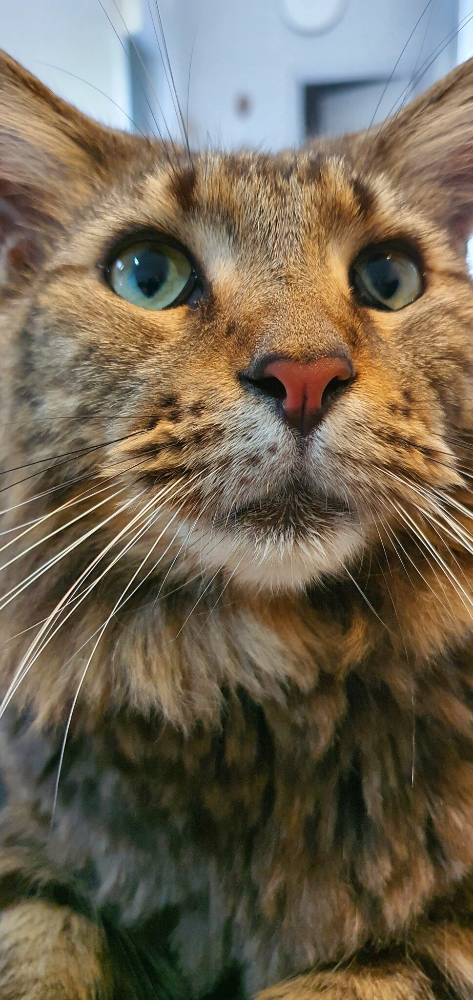
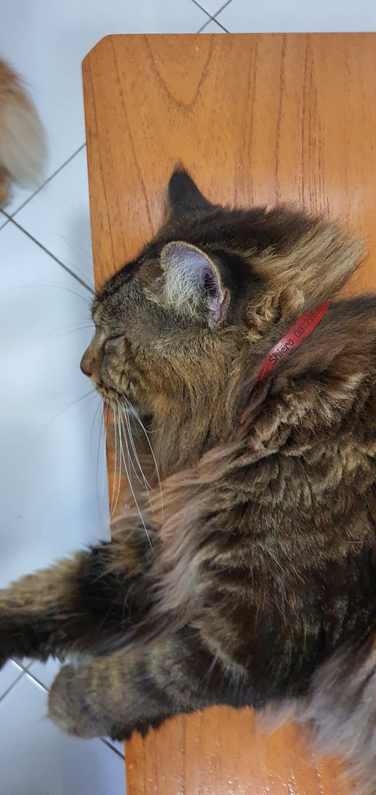
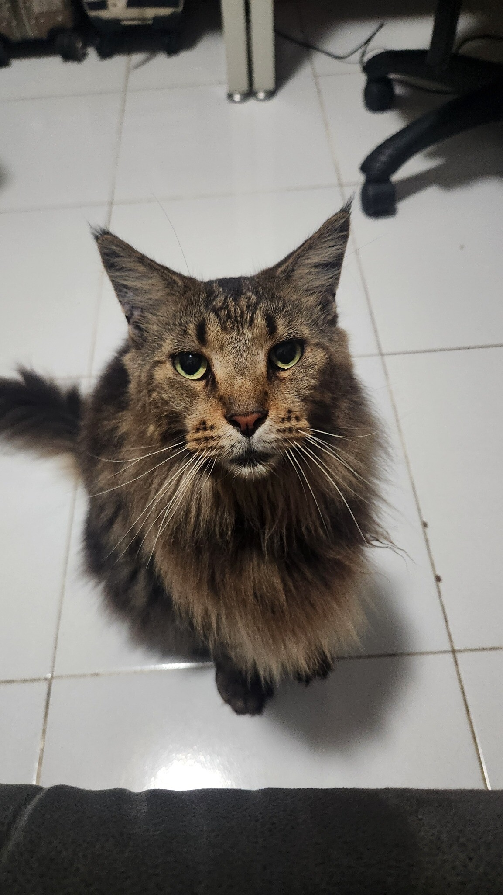
Kilas cerita di satu masa, medio 2018 — salah satu babak dari kumpulan kisah kebadungan Shiero, dengan sedikit kabar terbaru di penghujung cerita.
Untuk kesekian kalinya, malam itu si bontot Shiero nekat manjat tembok belakang rumah. Seperti biasa, tim Casa de Luna dibikin heboh dan akhirnya bahu-membahu menahan si gembul ini supaya nggak keburu meloncat ke rumah tetangga. Kalau sampai kejadian, wah, bisa cilaka tiga belas — bayangin begadang nyariin kucing item di tengah malam gelap gulita. Nyari jarum di tumpukan jerami aja udah pusing, apalagi nyari kucing hitam tanpa lampu jalan.
Shiero memang punya kebiasaan memanjat tembok kalau udah malam. Setelah kami amati beberapa kali, ternyata alasannya sederhana: dia lagi berburu, dengan target utama dua sampai tiga ekor cicak yang berani nongol di dinding. Begitu berdiri di sudut tembok, matanya langsung terkunci ke buruan — excited banget, mulutnya mangap-mangap sambil meong-meong kecil, siap pasang kuda-kuda buat berburu. Radarnya nyala, kuda-kuda siap, dan dalam satu lompatan — hap! — sekali sergap.
Masalahnya, niat besar itu jarang berbanding lurus sama hasil. Si bocah nggak pernah benar-benar berhasil menangkap cicak-cicak itu, karena kami selalu ikut campur mengalihkan perhatiannya — sedikit banyak demi keamanan cicaknya juga, sih. Segala strategi sudah dicoba: dari menyorotkan laser ke dinding biar dia teralihkan dan lari ke arah toren (biar gampang ditarik turun), sampai jurus klasik menyodorkan makanan basah supaya dia sibuk makan sementara kakinya diam-diam ditarik. Butuh sekitar sepuluh menit drama tarik-menarik sebelum si gembul akhirnya berhasil diamankan.
Drama sepuluh menit itu ternyata bukan kejadian sekali dua kali — cukup sering terulang sampai akhirnya kami hafal betul jadwalnya. Dari hasil observasi siang dan malam, pola Shiero ternyata cukup jelas: lompat pagar itu kegiatan khusus malam hari. Siang atau sore, dia lebih memilih nongkrong santai bareng geng Casa de Luna, atau main petak umpet dan lulumpatan (lompat-lompatan) nggak jelas juntrungannya. Tapi begitu matahari terbenam, jam jaga ekstra harus diaktifkan — soalnya ternyata banyak sekali buruan yang keluar di malam hari, dan Shiero nggak pernah mau ketinggalan kesempatan.
Ternyata, bakat berburu malam ini bukan monopoli Shiero seorang. Cerita ini jadi mengingatkanku pada satu lagi anak gadisku, Bonita. Kalau malam tiba, dia juga punya kebiasaan serupa: duduk sendirian di halaman belakang, mengamati cicak-cicak yang lalu-lalang dengan tatapan tajam, diam-diam menilai mana buruan paling yahud buat malam itu — bedanya, Bonita jauh lebih tenang dan strategis, nggak sampai bikin satu rumah begadang.
Tapi dari semua predator amatir di rumah ini, Shiero tetaplah juara tak terbantahkan untuk kategori paling niat sekaligus paling sering ketahuan. Begitulah kisah si bontot Shiero dan obsesi malamnya pada cicak — cerita kecil yang selalu berhasil bikin satu rumah heboh. Kadang ngeselin, kadang bikin geleng-geleng kepala sambil ketawa sendiri, tapi selalu jadi bukti betapa hidupnya rumah rembulan ini karena tingkah kebadungannya. Hampir sembilan tahun sudah berlalu sejak malam itu, tapi setiap kali cerita ini dibuka lagi, rasanya seperti baru kemarin — Shiero kecil yang gesit, penuh energi, dan nggak pernah kehabisan alasan buat bikin geger satu rumah.
Shiero yang seperti itu yang paling aku kangenin — sosok paling niat berburu, paling sering bikin geger satu rumah gara-gara ambisinya sendiri. Sekarang, dia lebih banyak menghabiskan waktu duduk tenang di pojokan favoritnya, memilih mengamati dari jarak dekat ketimbang memanjat tembok atau berburu cicak. Bukan lagi predator paling gesit di rumah — tapi tetap Shiero yang sama, dengan cara barunya sendiri menikmati hari.
Gagal ginjal dan sisa-sisa pertarungannya melawan virus memang membatasi banyak hal yang dulu biasa dia lakukan. Tapi itu bukan alasan buat berhenti berharap — justru jadi alasan untuk lebih menghargai setiap momen kecil yang masih ada. Aku masih setia menunggu saat dia mau naik lagi ke kotak favoritnya sekadar melihat dunia dari atas, atau menoleh sedikit lebih lama saat namanya dipanggil. Selama itu masih ada, itu sudah cukup jadi alasan untuk terus semangat dan gigih memberi yang terbaik buatnya, hari demi hari. Masih banyak tahun dan cerita lain yang ingin kami tulis bersama — untuk si badung yang penuh sayang ini.
Shiero sekarang menjalani hari-harinya dengan gagal ginjal yang butuh perawatan berkelanjutan. Sponsorship dari kamu membantu kami memastikan dia tetap nyaman, hari demi hari. Sponsori perawatan Shiero →
Catatan: diambil dari blog pribadi, sebuah cerita dari tahun 2018, dengan tambahan cerita hari ini.
Empat perubahan kecil pada perilaku Dunan menjadi bahasa paling jujur bahwa ada sesuatu yang tidak beres.
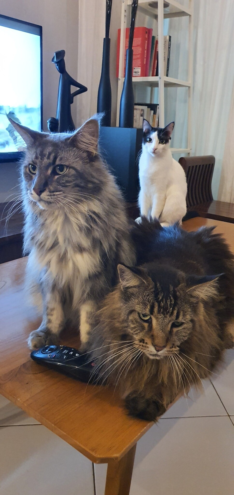
Franklin Dunan sudah hampir sepuluh tahun jadi bagian dari rumah ini — gondrong, kalem, dan seharusnya jadi kucing paling gampang ditebak isi hatinya. Makanya sore itu terasa aneh sejak detik pertama.
Biasanya, begitu namanya dipanggil, Dunan akan datang mendekat, kadang dengan miaw khasnya yang cuma dia yang punya. Tapi sore itu, panggilan demi panggilan berakhir sia-sia. Dia memilih pojok ruang tamu, memunggungi segala usaha untuk menariknya kembali. Tatapannya lemah, jauh dari ekspresi menggemaskan yang biasa bikin orang lupa dia sudah kucing paruh baya.
Menjelang magrib, saat geng bulu lain sudah berbaris rapi menunggu makan malam, formasi itu kehilangan satu nama. Snack dan wet food — dua senjata pamungkas yang biasanya tak pernah gagal — kali ini cuma dilirik, lalu diabaikan.
Dunan menyendiri di kolong tempat tidur, melingkarkan badan seolah dunia luar sedang tidak dia butuhkan. Ajakan main dari Shiero dan Othena pun ditolak mentah-mentah — sesuatu yang nyaris tidak pernah terjadi.
Sebagai orang yang sudah nyaris satu dekade mengurus anak-anak gembul di rumah ini, aku tahu diam bukan berarti tenang. Empat sinyal yang datang bersamaan malam itu — buang muka, menolak makan, mengasingkan diri, menolak ajakan main — adalah bahasa yang Dunan gunakan untuk bilang ada yang salah, jauh sebelum dia bisa menunjukkannya dengan cara lain.
Saat aku coba mengusap dagu dan dahinya, dia membuka mulut sedikit — dan dari situ tercium bau yang tidak biasa. Bukan bau mulut kucing pada umumnya. Ini yang membuatku memutuskan untuk mengamatinya semalaman, mencatat setiap detail sebelum memutuskan langkah berikutnya.
Paginya, tidak ada perubahan. Tim Casa de Luna membuka mulut Dunan lebih lebar untuk memastikan kecurigaanku. Gusinya bengkak.
Tidak ada lagi ruang untuk menunggu. Kami menyiapkan mobil, membawa Dunan ke klinik dengan catatan pengamatan semalam sebagai bekal.
Di ruang tunggu, waktu terasa berjalan lebih lambat dari biasanya. Semua pertanyaan ringan di kepala menghilang, digantikan satu yang terus berputar: seberapa serius ini, dan apa yang akan terjadi selanjutnya. Yang bisa kulakukan hanya menunggu, sambil diam-diam berharap gusi bengkak itu bukan awal dari sesuatu yang lebih rumit.
Di Casa de Luna, momen seperti ini bukan hal asing. Setiap hari kami menemani kucing-kucing yang menua atau sedang tidak baik-baik saja, dan setiap kali itu pula kami diingatkan bahwa merawat bukan cuma soal memberi makan dan tempat tidur yang hangat — tapi soal belajar mendengar bahasa yang tidak terucap.
Diam yang tiba-tiba, nafsu makan yang hilang, keinginan untuk sendirian, dan penolakan untuk bermain — empat hal kecil yang malam itu, kalau digabungkan, ternyata jadi peringatan paling jujur yang bisa Dunan berikan. Bukan checklist dari internet, tapi bahasa yang kami pelajari di Casa de Luna selama lebih dari sepuluh tahun saling mengerti.
Kalau kamu juga menemani kucing yang menua atau sedang tidak baik-baik saja, mungkin caranya bukan menunggu dia bicara — tapi belajar menerjemahkan diamnya.
Momen seperti punya Dunan bisa terjadi kapan saja, dan kami perlu selalu siaga untuk itu. Dukunganmu lewat donasi atau sponsorship membantu kami tetap siap setiap saat. Dukung kesiapan kami →
Ikuti terus cerita Dunan dan teman-teman di Casa de Luna ya — karena kisah ini hanya satu, dari sekian.
Seorang pengelana yang memilih pulang ke sofa Casa de Luna — lengkap dengan rutinitas malam dan dengkuran khasnya.
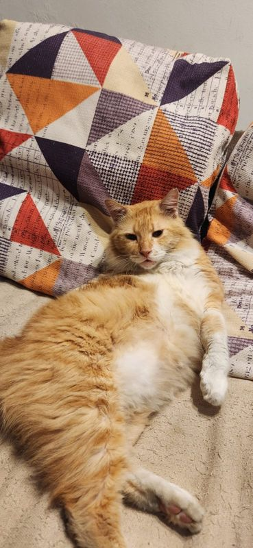
Malam ini ditutup seperti biasanya: gorden diturunkan satu-satu, lampu dipadamkan, dan seisi rumah paham isyaratnya — waktunya tidur.
Dia mulai menjilat dari ketiak kiri, lalu kanan, berulang sampai puas — standar kebersihan yang cuma dia sendiri yang tahu ukurannya. Mandi versi kucing: singkat, khusyuk, dan tidak untuk diganggu gugat.
Sesekali kepalanya terangkat, mengawasi satu-dua orang yang masih beberes, dan rombongan kucing yang berlarian masuk seperti domba digiring pulang menjelang gelap — patuh tanpa perlu dipanggil dua kali.
Giliran kaki, kiri-kanan, sementara di kejauhan berlangsung parodi absen malam: satu-satu digiring masuk, baru selesai dihitung eh kabur lagi ke luar, lalu digiring masuk lagi — namanya juga kucing. Tiga pos wajib lapor sebelum semua boleh dianggap aman: kanopi, halaman belakang, dan ruang tengah.
Riuh kecil ala tutup warung ini sesekali bikin dia menoleh, sekilas bingung — lalu dibiarkannya saja, seperti rutinitas yang sudah dihafal luar kepala, entah itu urusannya atau bukan.
Begitu absen terakhir kelar, kepala geng penjaga depan diturunkan ke pos jaganya — abuela, si petugas jaga malam multiras berkapasitas herder. Pintu wilayah inti dikunci, tanda hari sudah mau usai. Semua kembali ke tempatnya masing-masing.
Di atas sofa, serileks orang yang baru selesai berenang di laut, Jajang menggulung badan, siap tidur.
“Grunggg…” — dengkurannya cukup keras untuk bikin cicak, semut, dan kurcaci-kurcaci kecil di dua alam ikut menggerutu, geser sana-sini mencari posisi aman. Suara sekeras itu jarang terdengar di rumah rembulan ini — sampai Charlie si ADHD yang domisili di atas kulkas pun terusik, mepet-mepet ke ujung dinding mau sembunyi, sangat terganggu oleh makhluk tambun yang kaki-tangannya terkapar ke segala arah, dengan dengkuran yang berdentum tanpa jeda.
Dengkuran di tengah malam yang sunyi itu bikin anak-anak geng penasaran. Entah apa yang ada di kepala mereka — mungkin semacam: kenapa coba si tambun ini bisa ada di sini, dan nyenyak pula? — tapi semua cuma disimpan lewat tatapan, sesekali saling lirik, tanpa suara. Hanya saling bertukar lewat angin.
Yang diawasi dan diselidiki malah nggak kelihatan terganggu sama sekali — dengkurannya justru makin membahana. Ojesa, Alula, Cimili, dan Charlie saling bertatapan cukup lama, mengamati dari empat penjuru arah masing-masing, saling lempar pandang dari atas ke bawah, dari timur ke selatan. Satu jam berlalu, cuma sekali terdengar ‘ngeong’.
Entah apa yang sebenarnya mereka bicarakan — mungkin cuma angin malam yang hening yang tahu. Tak lama, mereka pun ikut bersandar, satu per satu — dimulai dari Ojesa yang melempar beberapa kali tatapan lintas arah, disusul Cimili, Charlie, lalu Alula. Pertukaran pandangan yang cuma makan waktu sepuluh menit itu, entah bagaimana caranya, cukup untuk jadi keputusan bersama.
Jajang pun dibiarkan tidur — lelap bersama dengkurannya.
Yang mereka lihat sekilas — tampak lelah, bulu dekil, tapi tetap tak bisa menyembunyikan warna orennya — ternyata penghuni rumah sebelah, yang dindingnya cuma dibatasi tembok tipis dari tempat kulkas Charlie bersandar. Dialah Jajang: pengelana yang sudah lama pensiun dari jarak jelajah jauh, kini rutenya cuma berputar di sekitar blok — malah, lebih sering di rumah sebelah itu.
Baginya, sejauh mata masih bisa menjangkau Casa de Luna, di situlah rumahnya. Dan malam ini, kebetulan dia kangen sofa — tempatnya ngaso kalau capek habis makan di depan, masuk santai, nggak pakai tiket. Nggak ada yang pernah protes, tapi juga nggak ada yang pernah bilang, ‘masuk, masuk, anggap rumah sendiri.’ Karena bagi seorang pengelana, begitu dia memutuskan untuk tinggal, di situlah rumahnya.
Siapa yang pernah minta izin buat keluar-masuk, atau bahkan sekadar mendengkur? Memangnya, apa itu Izin?
Perjalanan Tatiana Olenka yang oleng, penuh kejutan, dan tetap menjalani hidup dengan caranya sendiri.
Dalam temaram malam, ada sosok limbung yang jalannya tak pernah butuh pegangan — terus melangkah, terus saja, meski tidak pernah lurus.
Dari kejauhan aku menimbang: mendekat, atau cukup mengamati dari sini saja. Soalnya dia bukan cuma limbung — dia juga menggerutu, persis orang yang lagi nagih utang dan duitnya nggak balik-balik.
Begitulah si kucing oleng ini jadi penghuni komplek dengan titik edar paling sporadis — pagi di depan Alfa, siang di blok belakang, malam entah di blok mana dekat rumah. Satu-satunya yang konsisten dari dia cuma jalannya yang limbung. Sempat kepikiran: jangan-jangan anak ini mabuk sepanjang waktu?
Begitulah perjumpaan pertama kami dengan Tatiana Olenka — dari jarak jauh, sampai akhirnya mau tak mau jadi lebih dekat gara-gara komplain warga perumahan soal kucing-kucing liar yang doyan mengacak-acak sampah, atau sekadar nangkring santai di teras rumah orang.
Soal orang tidak suka kucing, dengan alasan apa pun, itu di luar kuasa kami di Casa de Luna. Yang bisa kami lakukan cuma satu: evakuasi. Jadilah seekor induk dan tiga anaknya — yang belakangan diberi nama Alfa, Beta, dan Chiqita — plus Olenka, ikut diboyong.
Mereka sempat ditempatkan di rumah Casa de Luna #2. Di sana, Olenka sempat blooding — disinyalir piometra — dan harus diobati sebulan penuh. Belum juga genap sebulan, Olenka keburu demam tinggi, dan akhirnya ditarik ke Casa de Luna pusat.
Dari situlah cerita Olenka benar-benar dimulai.
Olenka sakit berkali-kali. Yang pertama, badannya mendadak lunglai, kepalanya jatuh ke lantai, diam tak bergerak sekian lama, dipanggil pun tak menjawab. Kami panik, langsung intervensi hidrasi karena turgor kulitnya sudah melemas — tanda dehidrasi yang nggak bisa ditunda. Sempat membaik beberapa hari, tapi kondisinya drop lagi tak lama kemudian.
Sepanjang enam bulan berikutnya, Olenka jadi pelanggan tetap klinik — cek darah, rontgen, semua demi memastikan kondisi piometranya tidak bertambah parah. Kami khawatir nanahnya bisa meracuni tubuhnya. Tapi yang bikin kami lebih was-was lagi: salah satu ginjalnya teraba membesar.
“Ini kanker, Mbak. Sudah bermetastasis,” kata salah satu dokter, sambil mengoleskan gel USG ke area ginjal Olenka.
Berulang kali.
Dan bukan cuma dokter itu. Beberapa waktu kemudian, saat Olenka mau disteril, hasil rontgennya lagi-lagi menunjukkan pembesaran di salah satu organ — ginjal, lagi-lagi.
“Ini kanker ginjal yang sudah bermetastasis,” kata dokter lain lagi. Sudah tiga dokter, kalau aku hitung-hitung.
Dari beberapa kali cek darah pun, satu hal jelas: ginjal Olenka bermasalah. Angka BUN dan kreatininnya tinggi — meski tidak setinggi punya Shiero — jadi protokol perawatan ginjal yang kami jalankan pun mengikuti pola yang sama seperti punya Shiero.
Dan dari sekian banyak kunjungan ke klinik, ada satu pemicu yang bikin visit-visit berikutnya terus berlanjut selama dua bulan: episode epilepsi.
Jadi bukan cuma kanker yang sudah bermetastasis, bukan cuma ginjal yang mengarah ke gagal ginjal — Olenka juga punya gangguan saraf dan epilepsi bawaan. Aku lihat sendiri Olenka kejang keras suatu sore, persis sebelum proses audit kantor dimulai. Timing yang luar biasa tidak membantu.
Aku yang lagi jongkok langsung lompat lari ke pintu, balik lagi ke kandang, lari ke pintu lagi — bolak-balik tanpa rencana. Bingung, khawatir, kasihan, pengen nolong, tapi ya itu tadi: bingung.
Tau kan?
Episode epilepsi ini jadi langganan tetap dalam hidup Olenka. Apalagi kalau lagi musim birahi — kejang bisa datang minimal dua kali seminggu.
Kami sudah terbiasa menghadapi seri “kejutan listrik” Olenka, yang memang selalu datang di masa birahi — masa ketika dia justru bisa dipegang, manja pula. Tapi begitu kembali “normal”, Olenka berubah jadi monster kecil: disentuh sedikit saja, siap-siap kena cakar. Sensitifnya kebangetan.
“Olenka yang cantik, Olenka yang manis,” begitu aku selalu memanggilnya begitu dagunya mulai menempel lantai, tanda dia mau tidur. Dan kalau sudah tidur, Olenka tidur kayak orang mati: digas motor di sampingnya, atau mesin pemotong rumput tetangga menyala persis di dekat telinganya, dia tetap pulas. Ini bahkan terjadi di masa normalnya — bukan cuma pas dia kecapekan habis kejang.
Si cantik ini juga pernah kena FIP, pas bersamaan dengan treatment CKD-nya. Coba bayangkan: menyuntik infus dan obat-obatan lain ke kucing yang sensitifnya minta ampun itu — bukan main susahnya. Tapi lama-lama, itu pun jadi rutinitas biasa.
Olenka sudah khatam jadi pengunjung klinik: didiagnosa piometra, divonis CKD, kena infeksi virus FIP, didiagnosa kanker ginjal bermetastasis, plus gangguan saraf motorik dan epilepsi. Paket lengkap.
Entah kesepakatan apa yang Olenka buat sebelum mendarat ke dunia fana ini, sampai-sampai paket hidupnya selengkap itu.
Tapi Olenka tetap menjalani hidupnya dengan jalan yang tak pernah lurus dan tujuan yang tak pernah jelas — matanya selalu menengadah ke atas, padahal kakinya melangkah di bawah. Dengar orang batuk sedikit saja, atau sekadar dilewati kucing lain, dia bisa langsung terjengkang. Urat lebay yang entah apa namanya dalam ilmu kedokteran.
Dunianya cuma ada dua: normal dan birahi. Kalau normal, dia jalan muter-muter tanpa arah dan tanpa henti, mengelilingi apa saja sambil seolah menceramahi semua yang dilihatnya — roda sepeda, kaki meja, bahkan anak kucing yang lagi nenen dan nggak ngerti apa-apa. Sebaliknya, kalau dunianya lagi penuh cinta, dia bergulung-gulung di lantai sambil teriak-teriak gegoakan, cukup kencang untuk bikin tetangga curiga — sampai-sampai Olenka terpaksa diasingkan setiap malam.
Bayangkan: sebelum merem mau tidur, Olenka sudah gegoakan; begitu bangun, intonasinya masih persis sama. Nggak ada yang tahu kapan dia benar-benar tidur — atau jangan-jangan dia gegoakan semalaman penuh? Coba tebak sendiri seberapa lama tetangga bisa menahan diri untuk tidak lapor ke pak satpam.
Jadi kalau sampai ada patroli satpam yang mengetuk pintu, itu bukan hal yang berlebihan — soalnya Olenka memang bisa kelewatan.
Tapi Olenka yang cantik, Olenka yang manis, tidak bodoh. Catat: tidak bodoh.
Evakuasi ke gudang belakang memang bisa meminimalisir protes warga, juga razia suara di malam hari. Tapi ada satu hal yang perlu dicamkan: begitu pintu gudang dibuka di pagi hari, isinya berubah jadi kapal pecah dihantam tsunami.
Hadiah pagi dari seorang Olenka.
Habis itu dia akan makan. Jalan-jalan pagi diselingi siulan-siulan centil ala Olenka yang lagi birahi. Nanti, agak siang atau sore yang teduh, dia akan tergelepar kena sengatan — kadang cuma tipis-tipis, kadang cukup tebal sampai seluruh badannya terguncang dan pipisnya keluar begitu saja.
Olenka memang bukan kucing yang gampang dirawat, apalagi gampang ditebak. Ginjalnya rewel, sarafnya iseng nyetrum sendiri, jalannya nggak pernah lurus, jam tidurnya cuma dia yang tahu. Daftar diagnosisnya saja sudah bisa jadi satu paragraf sendiri. Dan memang sudah.
Tapi herannya, dari semua penghuni Casa de Luna, Olenka-lah yang paling nggak kelihatan terbebani oleh daftar itu. Baginya, cukup ada makan di pagi hari, ada jalan-jalan sambil bersiul genit di siang hari, dan ada sudut gudang untuk gegoakan sepuasnya di malam hari. Itu saja sudah alasan yang cukup untuk terus hidup dengan caranya sendiri — oleng, berisik, dan tidak merasa perlu minta maaf soal itu.
Mungkin demikian seorang Olenka menjalani hidup - tidak dengan tenang dan manis seperti kucing kebanyakan, tapi dengan tetap jujur jadi dirinya sendiri. Dikasih paket hidup paling lengkap isinya, dia tetap memilih menjalaninya dengan gayanya sendiri — bukan karena harus, tapi karena bisa.
Dan kalau jalan lurus itu artinya harus jadi kucing lain, Olenka lebih pilih belok-belok selamanya — asal tetap jadi Olenka.
Kejar-kejaran seru antara Sang Kecoa Hitam Beradar Satu dan Trio Wewew: Binggo, Flyn, dan Elmo.
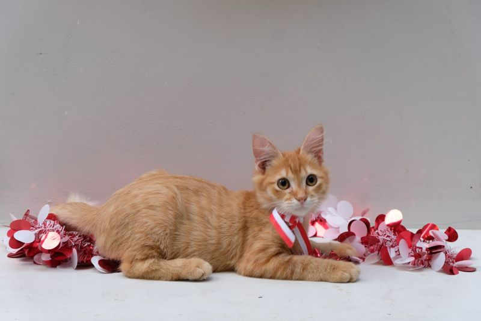
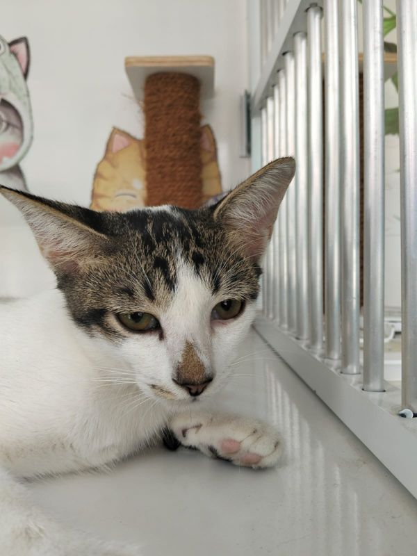
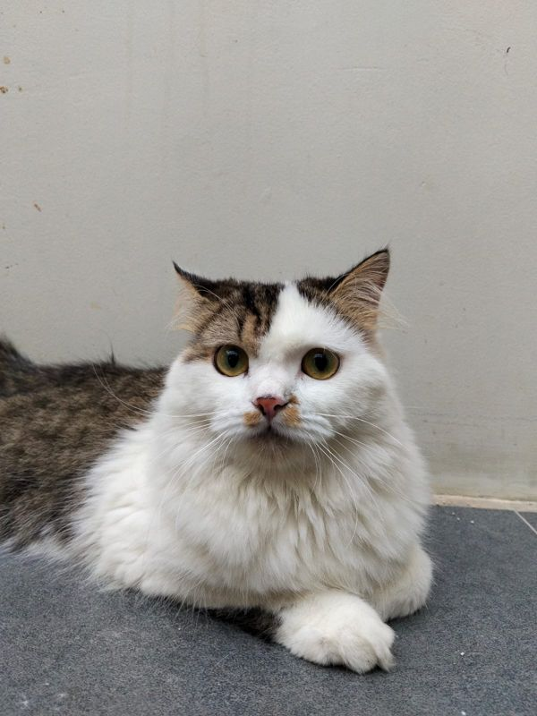
Siaran langsung babak pembuka: berlari dengan radar yang tinggal sebelah, Sang Kecoa Hitam Beradar Satu — buronan kelas kakap kompleks ini — berusaha kabur dari kejaran para bandit kecil yang sudah terasa seperti dikepung massa dari segala penjuru arah. Padahal, cuma tiga krucil, dipimpin Binggo Suringgo Moreno dari bangku komando. Ketiganya gesit, lincah berkelok di setiap tikungan, formasi rapi bak tim profesional.
Mungkin si kecoa sudah bingung harus bersembunyi ke mana. Makanya, kalau beraksi jangan sendirian — belajar saja dari geng bandit ini: sebar personel, tutup semua jalan keluar. Taktik yang sayangnya tidak pernah diajarkan di sekolah kecoa mana pun.
Sang buronan lari dan bersembunyi di balik helm yang sudah bertengger di situ sedari tadi, bau karet dan keringat bercampur jadi satu — ada beberapa sisi gelap tempat ia bisa menyempil, dengan radar yang tinggal satu.
Flyn mencoba berekspansi, menerobos masuk dengan kepala dan badan kecilnya — tapi tak lama kemudian keluar lagi, terbatuk-batuk. Mungkin keringat si empunya helm hampir membuatnya pingsan. Ini bukan mundur, batinnya mungkin berkata, ini cuma strategi napas.
Pertaruhan yang tak sebanding. Wasit mana pun pasti sepakat.
Binggo sendiri menunggu di luar, cukup dekat dengan lubang kepala helm yang dijaga Flyn, dan di sisi lain berdiri Elmo — posisi bek sayap yang nyaris tak pernah kebagian bola. Meski peluangnya kecil sekali si kecoa akan lari ke arah Elmo, ia tetap bertahan di posisinya, disiplin seperti pemain yang takut kena kartu kuning dari pelatih. Cara berpikir Elmo memang kadang berbanding terbalik dengan rekan-rekannya — tapi mereka sudah terbiasa tidak berdebat soal itu. Yang penting, begitu kecoa kabur, ketiganya akan menyergap serempak tanpa perlu komando, seolah ada peluit yang hanya mereka bertiga yang dengar. Terlalu lincah — Sang Kecoa Hitam Beradar Satu ini, satelit kecil yang terus berputar menghindar, justru jadi bukti otentik kehebatan kerja sama mereka bertiga.
Kali ini agak lama. Si kecoa berhenti bergerak. Flyn yang justru tidak sanggup menunggu — sabar memang bukan keahliannya.
Akhirnya semua berkumpul di luar markas. Si kecoa sendiri entah sedang bertapa atau bersembunyi. Cukup lama mereka menunggu, setelah kejar-kejaran yang jelas tak imbang bagi si kecoa. Ketiganya terlalu gesit — melewati roda-roda sepeda, lantai yang tinggal menggelinding saja, bahkan dinding berkotak-kotak yang tadinya dikira cuma bisa dipanjat kecoa. Biasanya ketiganya cuma rebahan minta dilayani seperti raja — tapi sore itu, kucing-kucing makzul ini rela turun takhta dan ikut memanjat juga, demi seekor kecoa.
Akhirnya, di helm inilah pengejaran trio kucing ini sedikit terhenti — skor sementara: Kecoa 1, Trio Wewew 0.
Si kecoa akhirnya mendapat waktu sekejap untuk rehat — mungkin juga sambil memasang kuda-kuda, siap kabur lagi kapan saja.
Lalat, nyamuk, dan kunang-kunang yang baru saja lewat di antara kepala ketiganya cukup berhasil mengalihkan perhatian. Elmo terutama, seperti tersirep, matanya mengikuti kunang-kunang yang menari pergi — lupa sama sekali bahwa misi aslinya adalah seekor kecoa, bukan pertunjukan cahaya.
Flyn dan Binggo pun sama sekali tidak menolak — mungkin memang dari tadi menunggu alasan untuk mengundurkan diri dari misi. Kerlap-kerlip lampu malam menggoda ketiganya untuk mengejar sasaran baru, apalagi setelah si cokelat bersatelit satu itu makin tidak jelas arah dan tujuannya.
Diintip tidak ketemu, didatangi malah sembunyi.
Kunang-kunang ternyata menawarkan lebih banyak harapan ketimbang seekor kecoa beradar satu.
Ketiganya pun berlalu, mengejar kerlap-kerlip yang menggoda itu. Formasi rapi, radar militer, kuda-kuda siaga — semua strategi hebat tadi, kalah telak oleh lampu kelap-kelip. Skor akhir: Kecoa 1, Kunang-kunang 1, Trio Wewew 0.
Klementina Marinka — atau Marina — pernah datang sebagai pengunjung musiman. Setelah melewati operasi dan masa pemulihan, kanopi kini menjadi rumahnya.
Sesekali dia marah — perutnya yang klewer-klewer jadi pusat perhatian kami, sampai mau tidak mau Marina harus digurita, dibungkus kaos ketat semacam baju kucing. Kulit perutnya tipis, kadang tampak berjuntai, bikin kami khawatir seisi perutnya ikut tumpah kalau tidak ditahan.
Gurita jadi solusi paksa biar semua kleweran Marina tetap ajek. Awalnya dia ngambek tapi menurut juga. Tapi begitu masuk hari ketiga mengenakan baju itu, kesabarannya habis — dia mulai cari seribu satu cara. Dan baju itu pun lepas, lagi. Tapi tetap, kami pakaikan lagi. Lagi, dan lagi. Sampai akhirnya Marina paham arti kata bosan.
Nama lengkapnya Klementina Marinka — katanya diambil dari gaya jalannya yang klewer-klewer menyapu lantai, entah logikanya di mana sampai bisa jadi ‘Klementina’. Tapi sehari-hari dia tetap dipanggil Marina, atau Marin. Dari semua pengunjung musiman Casa de Luna, dialah yang paling jual mahal — asal-usulnya entah di blok mana — sebelum akhirnya menetap juga, setelah perawatan intensif pascaoperasi, November sampai Januari 2026.
Padahal, jauh sebelum semua itu terjadi — sebelum dia punya nama sekalipun — Marin (begitu kami memanggilnya, sesekali juga Marina) cuma pengunjung musiman Casa de Luna: musim sarapan, musim makan sore. Tanpa disadari, statusnya naik jadi pengunjung tetap, sama seperti yang lain. Di mana ada makanan, di situ ada Marina. Nggak ada yang wow di situ — familiar, bukan?
Awal-awal datang, Marina malu-malu kucing — tapi maunya kentara, diam-diam ingin menang sendiri. Sifat dominan yang tidak sulit disembunyikan di balik tingkah malu-malunya. Dan piring makan, seperti biasa, tak pernah berbohong: dari situ ketahuan banyak hal soal kasta, karakter, sampai masa depan seekor kucing di geng bulu ini.
Singkat cerita, Marina datang sepaket dengan perut buntal yang mirip orang hamil, plus emosi yang naik-turun. Suatu waktu dia sempat menghilang tiba-tiba, lalu muncul lagi — tapi begitu waktunya makan, dia malah menjauh, sampai hampir 20 meter, dekat pos satpam. Dugaan kami makin kuat: Marina mungkin sudah melahirkan — perutnya terlihat lebih longgar — dan setiap kali pergi seusai jam makan, kemungkinan besar dia kembali ke tempat persembunyian untuk menemui anak-anaknya.
Misteri Marina, pikir kami waktu itu, sudah terjawab.
Tapi suatu kali, ketika dia datang untuk makan, perutnya terlihat lebih jelas — dan ternyata tidak kosong. Rasanya Marina belum benar-benar tuntas melahirkan.
Dugaan itu terbukti ketika suatu sore, Marina tampak jauh lebih lesu. Kami dapat kabar dia cuma bersandar diam di pojok pagar depan rumah, darah segar bercampur merah gelap terus menetes. Tatapannya yang biasanya garang, perlahan tapi pasti, berubah sayu. Gerak-geriknya pun makin terbatas. Sore itu juga, Marina langsung kami bawa ke klinik. Dia pasrah — teriakan tiga oktaf khas Marin masih ada, cuma melemah.
“Wah, ada 5 janin, Mbak. Tapi dua di antaranya masih terpantau detak jantungnya, tiga lagi sudah prematur,” kata dokter sambil mengoles-oles gel USG, tatapannya tak lepas dari layar, mencocokkan tiap geliat janin Marin yang tersisa — memastikan lokasi dan ada-tidaknya napas pada tiap makhluk kecil di sana.
Marina sempat diberi medikasi, suplemen, dan waktu tenggat untuk observasi — begitu saran dari klinik itu.
Tapi, membawa janin yang sudah mati di dalam tubuh — bagaimanapun itu dijelaskan — bisa berakibat toksik buat sang induk. Itu pendapatku sendiri, yang waktu itu berseberangan dengan tim medis tempat aku memeriksakan Marina.
Esok harinya, kubawa Marina ke klinik lain. Prosesnya cepat — dokter di sana sanggup langsung mengabulkan permintaanku: janin yang tersisa dituntaskan, sekalian rahimnya diangkat, supaya Marina benar-benar pulih. Ditambah lagi, perutnya sudah menggelambir jauh di atas normal.
“Dok, semoga lancar operasinya ya,” kataku penuh harap pada dokter tersebut — lalu pergi, ninggalin Marin dengan perasaan campur aduk kayak Indomie yang baru diaduk.
Aku khawatir kondisi Marina. Tapi aku percaya tenaga medis.
Setelah beberapa jam yang rasanya cuma intermezzo panjang, aku menerima WhatsApp soal jumlah biaya yang harus dibayar.
Hampir jatuh pingsan.
“Tapi ini kan kucing rescue, bukan kucing saya,” sanggahku dalam ketikan WhatsApp.
“Iya, Mbak, tapi segini biayanya. Coba saya tanyakan ya.”
Demikian jawaban atas upaya negosiasi soal status Marina sebagai kucing rescue — setelah berpanjang lebar dan bolak-balik tak ada ujungnya.
Sekarang aku deg-degan dua kali lipat: soal operasi Marina, dan soal bagaimana cara membayar ongkos semahal itu.
“Kami hanya bisa membuat kebijakan dicicil, Mbak.”
“Ya sudah.” Toh semuanya telanjur dilakukan — masa iya semua benang mau kusuruh cabut lagi, terus janinnya dimasukkan balik, cuma gara-gara aku kesal soal biaya?
Aku kesal. Pasrah. Tapi mungkin, dengan dicicil, semuanya jadi sedikit lebih ringan.
Singkat cerita, biaya Marina si bodi klewer-klewer itu kucicil kurang lebih 4-5 bulan, diambil dari dana talangan yang biasanya kusisihkan untuk kucing-kucing sakit lain. Satu nyawa tertolong, dana buat yang lain ikut menipis — begitu risikonya.
Semenjak sakit dan resmi jadi penghuni Casa de Luna, Marina tinggal di kanopi bersama geng-geng lainnya. Dan sore-sore begini, kalau lihat dia loncat-loncat kecil mengejar kupu-kupu di sana, susah dipercaya itu tubuh yang dulu nyaris nggak ketolong.
Tapi tetap saja, dia konsisten — menggerutu, galak, darah tinggi. Semua makhluk, kalau bisa, wajib steril dari radius satu meter. Yang boleh masuk cuma angin, dan tentu saja piring makan — pada jam yang sudah disepakati. Titik.
Dan mungkin begitulah caranya Marina bilang terima kasih: bukan dengan manja, tapi dengan tetap jadi dirinya sendiri — perut yang dulu nyaris tumpah, sekarang menari dengan jaraknya sendiri, di kanopi yang akhirnya benar-benar jadi rumahnya.
Foto dari folder Photos Anabul—momen sederhana yang membuat sanctuary terasa seperti rumah.
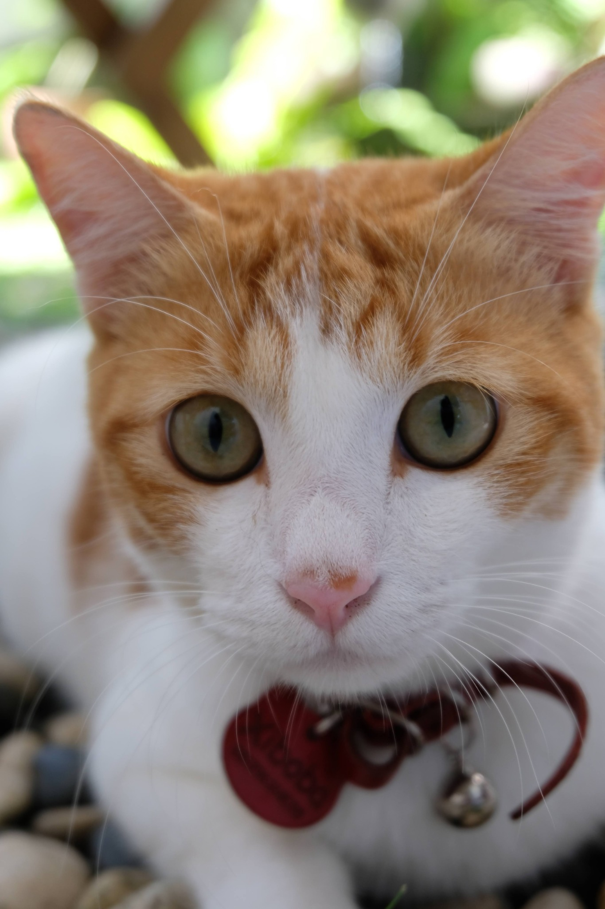
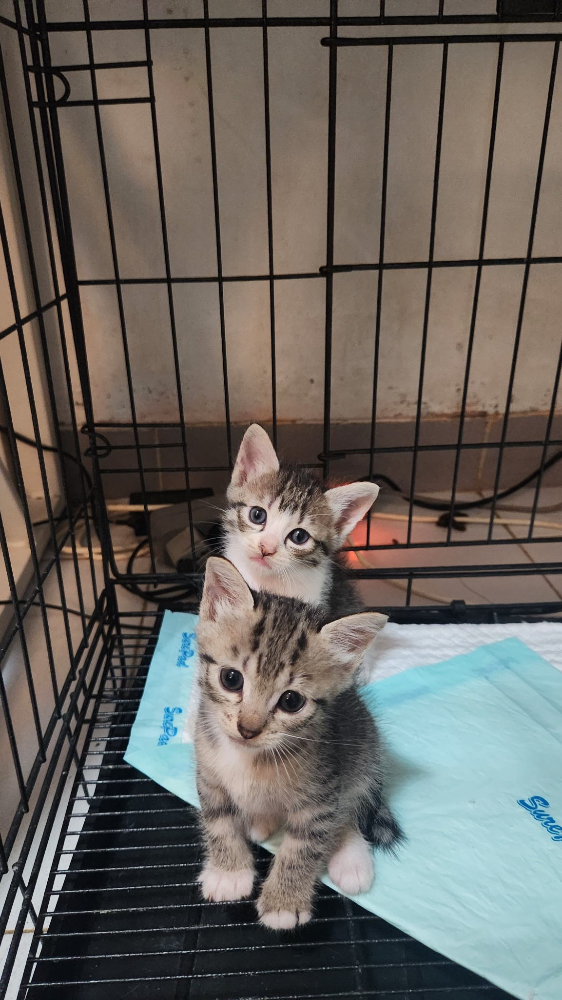
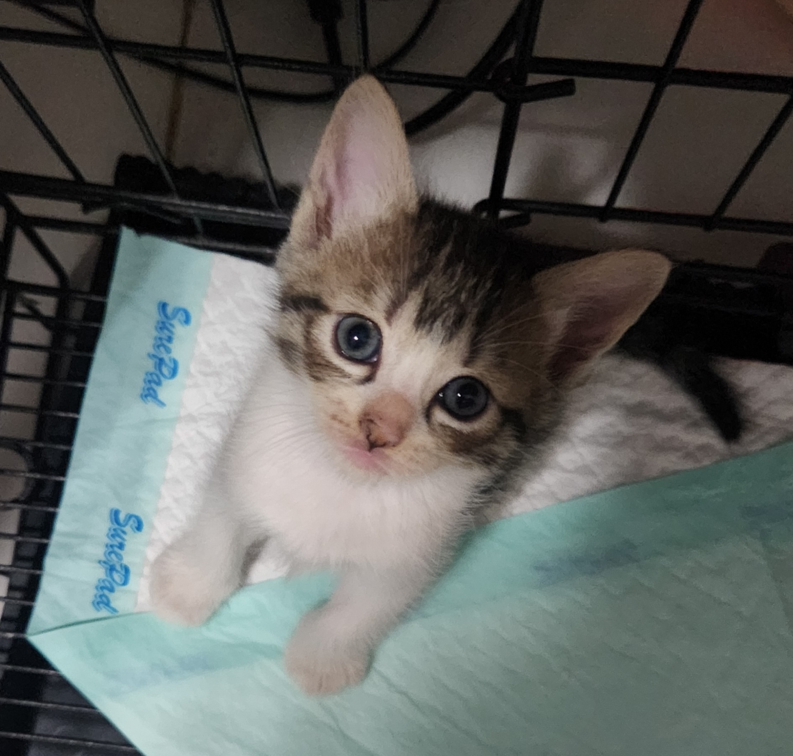
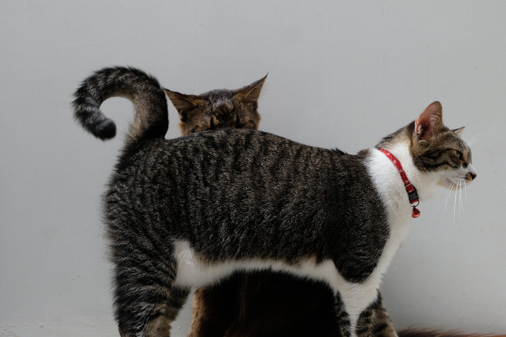
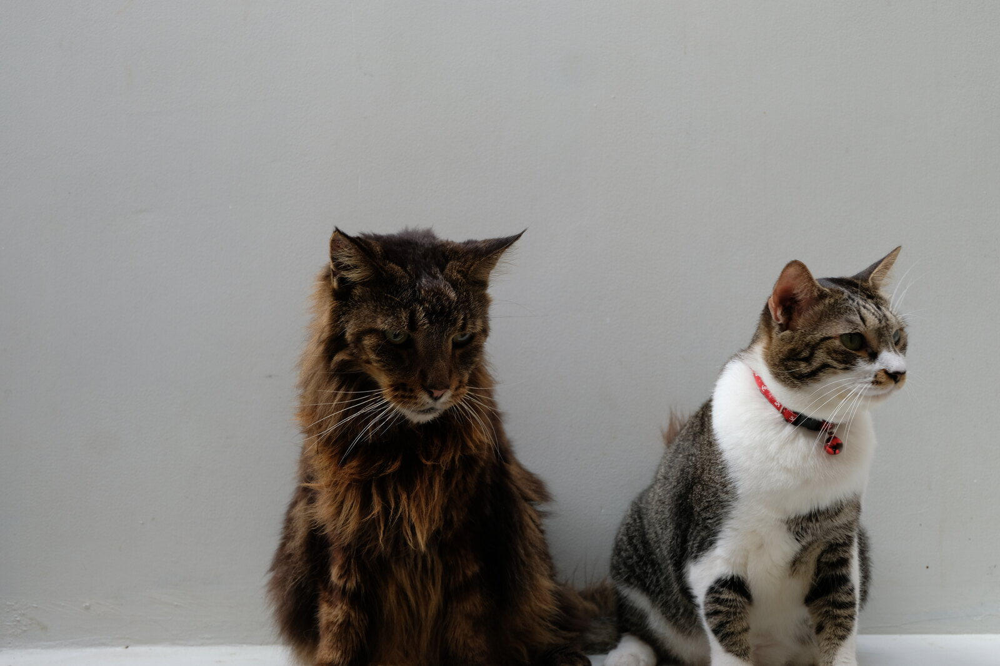
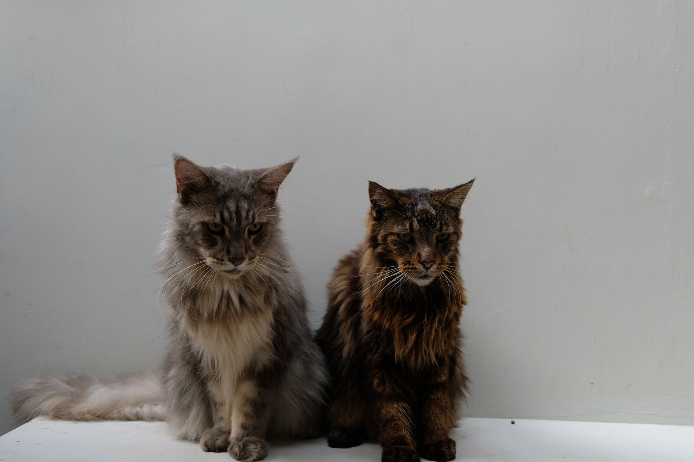
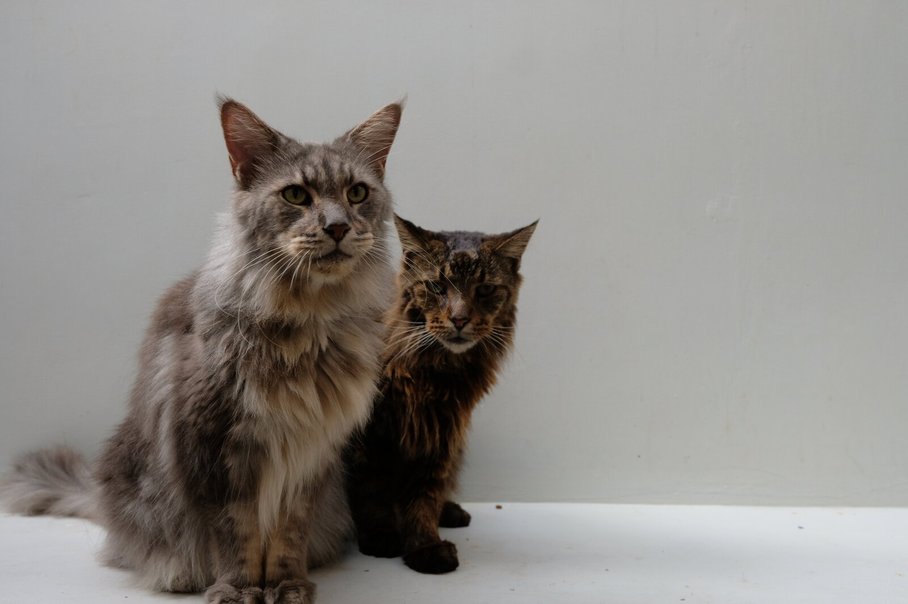
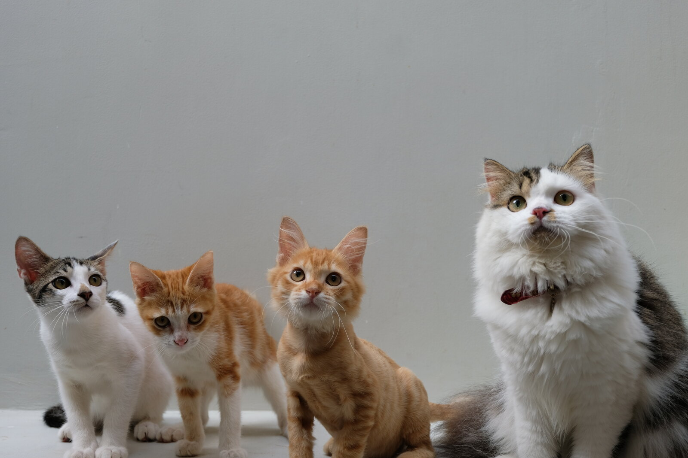
“Yang patah tidak selalu perlu diperbaiki agar layak dicintai.”
— Dari rumah kecil kami